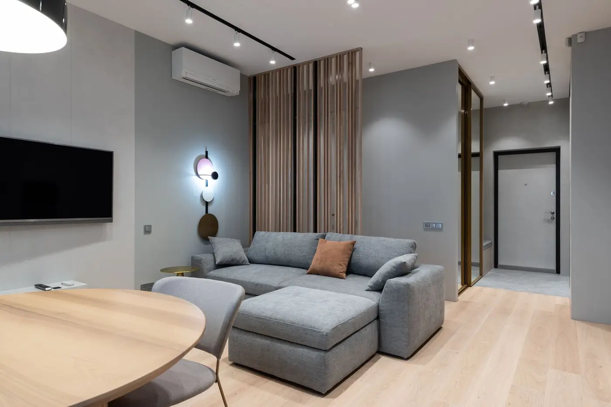
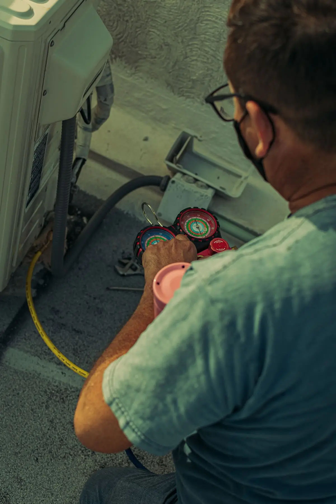
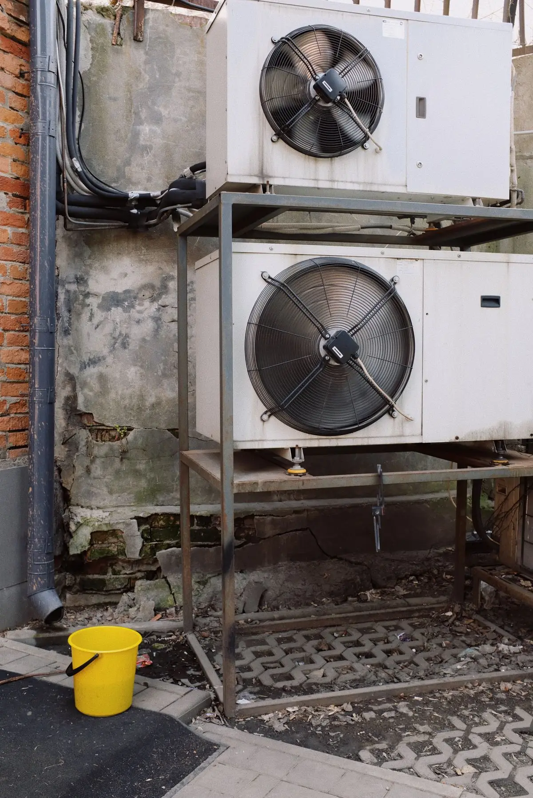
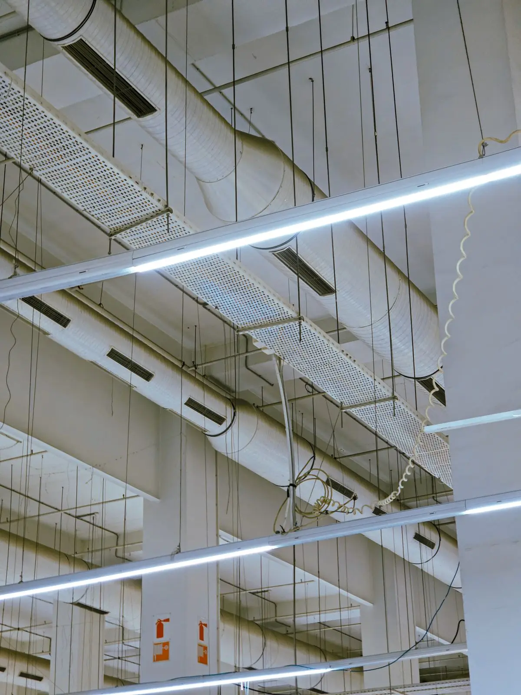
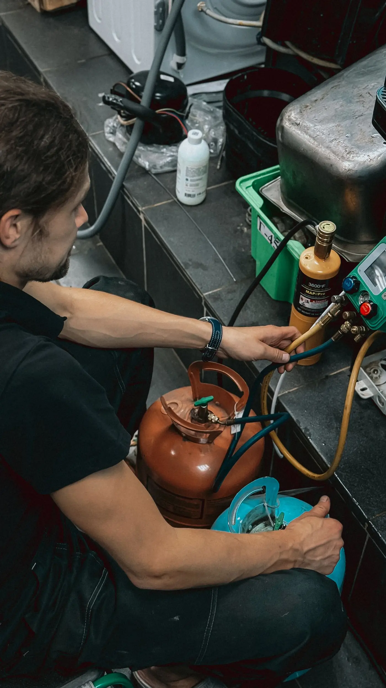

Sell. Install.
Replace. Maintain
New units sold and installed, old units replaced or bought back, and everything needed to keep them running. Eight services, carried out by our own technicians.
01 — New units, sold and installed
New unitsNew units at fair prices, installed to last. Supply only, or supplied and installed. We size the unit to the space and the Kuwait heat, not to the catalogue.
- Split units from 1 to 3 ton
- Window, cassette and ducted units from 2 to 5 ton
- Package units from 5 to 10 ton for halls, shops and warehouses
- Copper piping, drainage and electrical connection included
- Vacuum, leak test, gas charge and commissioning on every install
- Bulk supply pricing for contractors and building owners

02 — Replace and upgrade
Replace & upgradeAn old unit costs more to run every summer. We look at it first and tell you straight when a repair is the better buy. When replacement is right, we do it in one visit.
- Assessment before any price: repair or replace
- Like for like, or an upgrade to inverter, ducted or VRF
- The value of your old unit comes off the new one
- Existing piping reused where it is sound
- Old unit removed, gas recovered, unit recycled

03 — We buy old units
We buy old unitsWorking or faulty, we buy used air conditioners from homes, offices and buildings. Sell for cash, or put the value towards a new unit.
- Split, window, cassette, ducted, package and VRF
- Any brand, any age
- Priced the same day from a photo of the unit and its nameplate
- We uninstall it and take it away
- Cash, or credit against a new unit
- Bulk lots from buildings, offices and renovations

04 — VRF and central systems
VRF & centralFor villas, offices, showrooms and multi-floor buildings: many rooms with independent control from one efficient system.
- VRF outdoor units from 8 to 20 HP
- Hi-wall, cassette and ducted indoor units
- Load calculation and piping design
- Smart thermostats and central control
- Central ducted systems for commercial spaces

05 — Ducting and insulation
DuctingGood ducting is the difference between a cold room and a cold corner. We fabricate, insulate and clean duct systems for new builds and renovations.
- Galvanised sheet duct
- Pre-insulated duct panels
- Flexible duct, diffusers and dampers
- Insulation and sealing for Kuwait heat
- Duct system cleaning

06 — Annual maintenance contracts
Maintenance contractsA planned service visit costs far less than a breakdown in August. Our contracts keep units clean and running efficiently.
- Contracts for homes and villas
- Commercial contracts for offices, showrooms, schools and clinics
- Filter and coil cleaning, drain flushing
- Gas pressure, electrical and thermostat checks

07 — Repair
RepairWhen the cooling stops we come, diagnose first, price second, and then fix it.
- Diagnostic visit with a clear price before any repair
- Gas leak repair and top-up (R410a and R22)
- Compressor, motor and control board replacement
- Deep cleaning for split and window units
- All brands

08 — Spare parts
Spare partsParts in stock, for our own technicians and for other contractors and maintenance teams.
- Rotary and scroll compressors
- Fan motors, capacitors, control boards and sensors
- Thermostats and valves
- Copper pipe, insulation and fittings
- Refrigerants, filters and consumables

09 — Questions we hear
What size AC do I need for a room in Kuwait?
As a rule of thumb, Kuwait’s heat needs roughly 1 ton of cooling for every 12 to 15 square metres, more for top floors, west-facing rooms and large windows. We confirm the size with a survey before quoting.
What is the difference between a split AC and central air conditioning?
A split AC cools one room with its own indoor and outdoor unit. Central air conditioning cools several rooms from one unit through ducts, and a VRF system runs many indoor units from one outdoor unit with independent control per room. We install and maintain all three.
Do you buy old or used AC units?
Yes. We buy split, window, cassette, ducted, package and VRF units of any brand and any age, working or not. Send a photo of the unit and its nameplate for a same-day price. We pay cash or take the value off a new unit.
Should I repair or replace my old air conditioner?
If the unit is fairly new and the fault is a capacitor, fan motor or gas leak, repair is usually worth it. If it is old, needs a compressor, or runs on R22, replacing it with a new inverter unit is usually cheaper over time, and we take the value of your old unit off the price.
How often should an air conditioner be serviced in Kuwait?
With Kuwait’s dust and long cooling season, clean the filters monthly and have the unit serviced every three to four months, with a full check before summer. An annual maintenance contract schedules this for you.
Do you repair all AC brands?
Yes. We repair split, window, cassette, ducted, package and VRF units across brands.